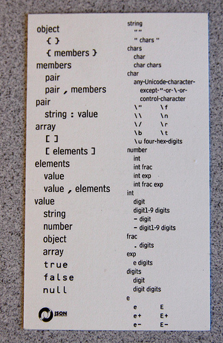
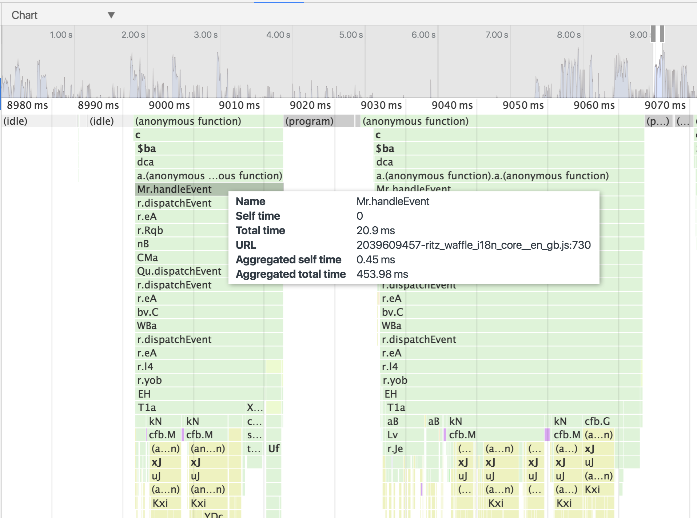
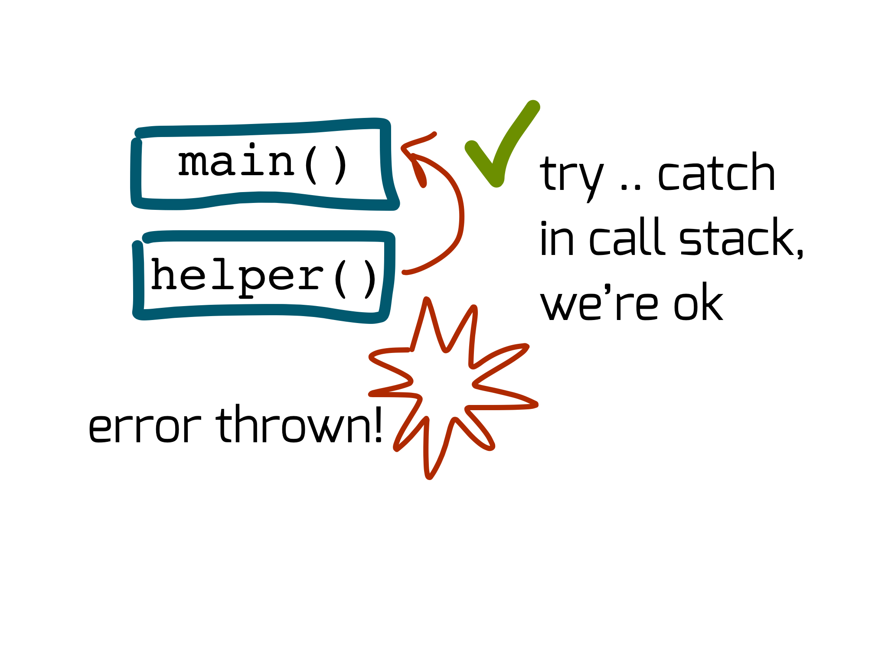
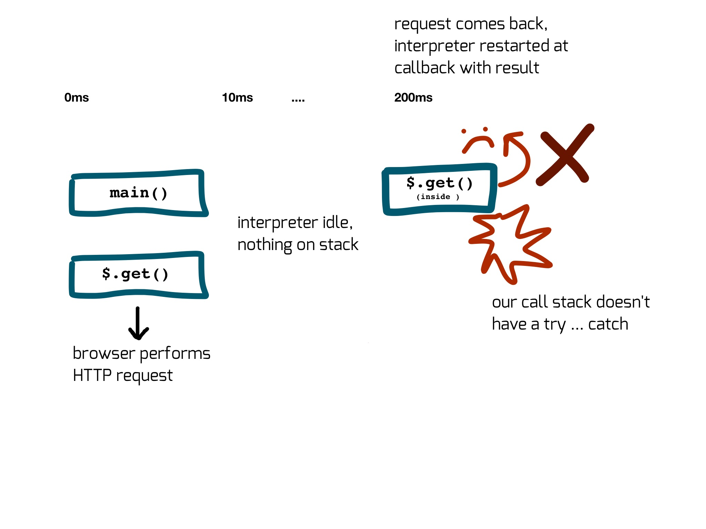

Advanced Javascript
Get setup
- WiFi: edit here
- Clone github.com/timruffles/js-class - you need git
- Install Node Current - nodejs.org
Today
Strong modern JS skills, ready for today's codebases
cooking

Three top-level skills
Reading/writing modern JS
Picking, & reasoning, about data-structures
Async: reasoning about the runtime
Our guide
// most code examples can be directly pasted
// in browser/node console
console.log((0, "what does this do?"));
Core
Aim
- Effective 'programming in the small'
- Writing JS like a native
Challenge
export function spy(spyFunction, {
target,
method,
}) {
const spiedFunction = method
? createWrappedMethod()
: target;
const name = `${method || target.name}Spied`;
const {
[name]: wrapped,
} = {
[name](...args) {
const result = spiedFunction(...args);
spyFunction(result, ...args);
return result;
},
};
return wrapped;
function createWrappedMethod() {
const method = target[method];
return (...args) => method.apply(target, args);
}
}
How variables really work
Variables
- A place for values to live
Values
- Primitives or objects
- Primitives: numbers, strings,
null, etc - Objects: arrays, regex, DOM nodes, etc
Let's declare some variables
let a = 1;
let b;
undefined vs undeclared
undefined
let notDefined;
console.log(notDefined); // ?
Undeclared
let someVar;
console.log(smeVar); // typo, what happens??
console.log(notHere); // and here?
Two things happened to variables with ES6
One: most variables are now constant
const aConstVariable = "how weird... I'm a constant variable";
Always use const, let if you can't
- ~98% of variables in last three codebases were
const
Rule: when let?
- 'Library'/helper code
- Where a function has internal state
- Why? This is not application logic, it's computation
- Old-school loops:
for(let i = 0(after measuring performance)
const
How does const work?
const tasty = ['ice cream', 'pizza'];
const tastyTwo = tasty;
tasty[0] = 'cake';
console.log(tasty, tastyTwo);
const is about assignment
- Will always refer to the same value
- But that value can change internally (AKA be mutated)
Two: variable declarations can launch rockets
How?
Destructuring
Expressive
const {
data: {
children: [
firstStory,
...rest,
],
}
} = redditApiResponse;
// vs
const firstStory = redditApiResponse
.data.children[0];
const rest = redditApiResponse
.data.children.slice(1);
Simple example
const person = {
name: 'Ada Lovelace',
dob: new Date('1815-12-10'),
};
const {
name,
dob
} = person;
Renaming
const person = {
name: 'Ada Lovelace',
dob: new Date('1815-12-10'),
};
const {
// left hand side is the source property the variable
name: nameOfPerson,
dob: dateOfBirth,
} = person;
console.log(nameOfPerson); // 'Ada Lovelace'
Arrays
const [breakfast, lunch, ...more]
= ["eggs", "falafel", "high tea", "a feast!", "hot chocolate"];
console.log(breakfast) // "eggs"
console.log(more) // ["high tea", "a feast!", "hot chocolate"];
No limit!
- warning: may cause colleagues to shun you
No limit!
const party = {
guests: [
{
name: "Hare",
treats: [
"chocolate eggs",
"toast",
"rich tea biscuits"
],
},
],
};
const {
guests: [{name, treats: [best, ...rest], mood = "jumpy" }],
} = party;
console.log(name, rest) // "Hare", ["toast", "rich tea biscuits"]
Okay, but what about the rockets?
Failing
const notGuest = 1;
const { name, treat } = notGuest;
console.log(name, treat) // undefined, undefined
Default expressions!
e.g
const BOOM = function() {
console.log('LIFTOFF 🚀');
};
console.log("Begin");
const rocketLaunches = [];
const [
mostRecent = BOOM(),
...rest
] = rocketLaunches;
console.log('End');
// we see 'Begin, LIFTOFF 🚀, End'
What could we do with this?
Validate structure!
function formatPerson(person) {
function required(property) {
throw Error('Missing ' + property);
}
const {
// left hand side is the source property the variable
name: nameOfPerson = required('name'),
dob: dateOfBirth = require('dob'),
} = person;
return {
nameOfPerson,
dateOfBirth,
};
}
// Error: missing name
formatPerson({});
Just enough modules
// egExport.js
const variableA = 1;
function variableB() {}
export {
variableA,
variableB,
}
// egImport.js
import { variableA, variableB } from "./egExport";
Let's try
exercises/destructuring
Demystifying scopes
Variables exist in scopes
- Why?
Understanding scope
- Necessary to be confident JS coders
Two things we want to be able to say
- 'a scope'
- 'in scope'
What is going on here?
let A = 10;
function alpha(A) {
A = 20;
}
alpha(A);
console.log(A);
'A scope'
Spot the scopes
// some-file.js
export function alpha(x) {
if(x > 5) {
return 'high';
} else {
const msg = low(x);
return msg;
}
// ...
function low(lo) {
return lo + ' was too low';
}
}
const gamma = 1;
alpha(gamma);
There are 6
- 4 types
1. Functions scopes
At what time?
Created per invocation
function main(A) {
console.log(A);
}
main(10);
main("hello " + 5);
Intuitive
function main(A) {
console.log(A);
}
let A = 10;
main(A);
main(A + 5);
2. Global scope?
Tricky!
export // ... we're in a module!
// so this is not a global, it's a module-level var
let something = 'hi';
Global scope
// browser - strict mode
window.something = "I am global";
// is now referencable anywhere in program via global scope
console.log(something);
// node
global.something = "I am global";
Acessing global object?
Just refer to property
Array;
// final check will be on global object, if not
// there will throw
anything;
Getting global itself?
// browser
window;
self;
// node
global;
// sloppy, outside functions
this;
3. Module scope
// some module.js
const someName = 1;
export { someName };
// what scope is this variable defined in?
otherName = 2;
Which files are modules?
- browser
<script type=module>, or imported viaimport
- node
- new
.mjs(AKA Michael Jackson Solution)
- new
- transpiled
- whatever you configure!
Module scoped variables
- Modules are evaluated once, on demand
- Modules live forever
4. Block scope
// ...
} else {
const msg = low(x);
return msg;
}
Cleans up loops
for(let i = 0; i++; i < 10) {
console.log(i);
}
// reference error
console.log(i);
Diagram of block scope

function main() {
// what happens here?
console.log(i);
for(var i = 0; i<10; i++) {
console.log(i);
}
}
What can block scopes replace?
IIFE
// nonModuleScript.js
'use strict';
const topLevel = 'hi';
!(function() {
// all this effort just to get a scope!
const iife = 'hello';
})()
{
// ahhhh
const block = 'hello';
}
// ?
console.log(
typeof topLevel,
typeof iife,
typeof block)
'In scope'
Let's check reasoning
function main() {
let A = 'hello';
let B = 'hi';
function one(A, C) {
let D = 'hola';
console.log(A,B,C,D);
}
one(A, 'yo');
one(A);
one(B,A);
console.log(D); // <- what happens here?
}
Using scopes for expression
Organisation
Low-level: helper functions
// makes role of first/second/third very clear: only
// used in complexProcess
function complexProcess(a,b,c) {
const d = first(a,b);
const e = second(c);
return third(d,e);
function first() { /* ... */ }
function second() { /* ... */ }
function third() { /* ... */ }
}
High level
Script organisation
main(process.argv[2], process.env.SOME_FLAG);
function main(targetFile, flag) {
const config = getConfig(flag);
const result = stepOne(targetFile, config);
console.error(notify(result));
output(result);
}
function stepOne() {
// ...
veryBoringDetail();
// ...
}
function veryBoringDetail() {}
Important to trivial
// this file takes CLI args and does something
main(process.argv[2], process.env.SOME_FLAG);
function main(targetFile, flag) {}
function stepOne() {}
// ...
// hundreds of lines later
function veryBoringDetail() {}
Trivial to important
const veryBoringDetail = () => {};
const anotherBoringDetail = () => {};
const stepOne = () => {}
// ...
// hundreds of lines later
const main = () => {}
// last line of the file
main(process.argv[2], process.env.SOME_FLAG);
var
Still necessary for JS devs
- Old runtimes, or weird ones: databases etc
- Issues in transpiled code 😱
Hoisting & var
function main() {
console.log(i);
for(var i = 0; i<10; i++) {
console.log(i);
}
}
// visualising the 'hoisting zone'
function main() {
var i;
⚡️⚡️⚡️⚡️⚡️⚡️⚡️⚡️⚡️⚡️⚡️⚡️⚡️
console.log(i);
for(var i = 0; i<10; i++) {
console.log(i);
}
}
Let's try
exercises/variables-and-scopes
Primitives
Team primitive
undefinednull- booleans
- numbers
- strings
- symbols
Quite sophisticated
e.g i18n
const event = new Date(Date.UTC(2012, 11, 20, 3, 0, 0));
// 20/12/2012, 03:00:00
console.log(event.toLocaleString('en-GB', { timeZone: 'UTC' }));
// 1,023,942 - one million, 23 thousand, 924
(1023942).toLocaleString('en-GB', {useGrouping: true})
// 10,23,942 - 10 lakh, 23 thousand, 924
(1023942).toLocaleString('en-IN', {useGrouping: true})
// ￥123,457
console.log((123457).toLocaleString('ja-JP',
{ style: 'currency', currency: 'JPY' }))
Your friend: MDN
- MDN
- now Mozilla, WC3, Google, Samsung co-project
- I prefix my searches "MDN ..."
String
const name = 'Tim';
const description = "It's saving escapes";
const complete = `${name}: ${opinion}`;
Interpolation: ${}
const opinionOnEs6 = "much nicer";
const es6 = `Interpolation: '${opinion}'`;
const opinionOnEs5 = "looks ugly";
const es5 = "Interpolation: '" + opinion + "'";
Template strings
const es5Html = "<h1>Ugh</h1>" +
"<p>This is horrid</p>";
const howMuch = "Much";
const html = `
<h1>Writing HTML with ES.Next</h1>
<p>${howMuch} nicer</p>
`;
Can write expressions in templates
const html = `
<h1>Zoo</h1>
<p>Good ${isMorning ? 'morning' : 'day'}</p>
<p>${ userSummary(user) }</p>
`;
Comparison
== has issues
const A = "\t\t\t\t\t \n \n \n" == false;
if(A) {
console.log("A was == false");
} else {
console.log("A wasn't == false");
}
Rule: always use ===
- Much clearer
But ONE place to use ==
null & undefined
- A nuisance since 1995.
- I'd stick to
undefined
Handling null and undefined
// undefined is not eqeqeq null
console.log(undefined === null); // false
if(x === null || x === undefined) {
// what a chore!
}
if(x == null) {
// equivalent, shorter, idiomatic
}
Rule: use == null
const missing = x == null;
===
- Same type?
Same value?
Special cases:
NaN !== NaN- Objects (non primitives): compares by identity, not value
==
- Objects (non primitives): compares by identity, not value
- Beyond that, very complex. Just use for
nullorundefined
Why NaN !== NaN?
Because...
- 5 times spoon shouldn't equal two to the power of whale!
// false, NaN, NaN
console.log(
5 * 'spoon' === Math.pow(2, '🐋'),
5 * 'spoon',
Math.pow(2, '🐋'),
);
Handling NaN
// true
console.log(
isNaN(5 * 'spoon'),
);
Numbers
// ?
console.log(0.1 + 0.2 === 0.3);
Floats are imprecise
Solution: use ints
// round to nearest micropenny (millionth of a penny)
const microPenniesToPounds = (microPennies) => (
// micro to pennies -> pennies to pounds
microPennies / 1e6 / 100
);
Or a library
Casting to boolean
const truthy = [];
const falsy = 0;
console.log(
Boolean(truthy),
Boolean(falsy),
!!truthy,
!!falsy,
);
Quality
Languages have gotchas
var launch = new Boolean(false);
if(launch)
console.log("launching missiles");
else
console.log("phew");
console.log("peace at last");
// what is output?
ESLint
- linter: clarifies code
- blunts some of JS's nasty gotchas
Try now
npm run lint:all
# per exercise
eslint exercises/some-exercise/exercise.js
Running ESLint
- Editor plugins
- CLI:
npm install --global eslint@latest
eslint path/to/js
Code style
// brevity at all cost!
yes && doThing()
if(yes) {
doThing();
}
Boring to debate!
Autofix
eslint --fix exercises/some-exercise/exercise.js
How to use npm scripts
- Open package.json
- Read the lint all
- Create a
lint:fixthat runs lint with fix npm runon its own lists scripts
Pro-level functions

Three ways to define
Declare
function add(a,b) {
return a + b;
} // <- no semi-colon required
Expression
const add = function(a, b) {
return a + b;
};
- (expression: evaluates to a value)
Fat-arrow
const add = (a, b) => {
return a + b;
};
Why?
Shorthand for legibility
const idsA = users.map(function (user) { return user.id });
// fat arrow, curly bracket form
const idsA = users.map((user) => { return user.id });
// drop parens for single argument
const idsB = users.map(user => { return user.id });
// bracketless form - no return, single expression
const idsB = users.map(user => user.id);
Rules on shorthands
Multiple statements
// note: multiple statements requires {} form
const twoStep = (a, b) => { console.log(a); return b }
Returning an object
// returning just an object requires you provide brackets
const object = (a, b) => ({a:1, b:2})
- Is a fat-arrow an expression?
Destructure in arrow functions
const addCounts = ({count}, {count: countB}) => count + countB;
Declarations
- special
- hoisting power!
main();
function main() {}
function important() {}
function fairlyImportant() {}
function boring() {}
function trivial() {}
function reallyNotThatInteresting() {}
Default parameters
// default parameters
function log(n, base = 10, opts = {}) {
// ...
}
'Required' parameters trick
// default parameters
function log(n = required("number"), base = 10) {
// ...
}
function required(name) {
throw new Error(name + " is a required argument");
}
Named parameters via destructuring
function log({ n, base }) {
return Math.log(n) / Math.log(base);
}
log({ n: 64, base: 4 }) // 3
log({ n: 90, base: 10 }) // 1.954...
// team up with required!
function log({ n = required("n"), base = required("base") }) {
return Math.log(n) / Math.log(base);
}
function required(name) {
throw new Error(name + " is a required argument");
}
Named parameters defaults
function log({ n, base = 2 }) {
return Math.log(n) / Math.log(base);
}
console.log(log({ n: 8 })) // 3
log() // TypeError: Cannot match against 'undefined' or 'null'
// How to fix?
Complete named parameters
function log({ n, base = 2 } = {}) {
return Math.log(n) / Math.log(base);
}
console.log(log({ n: 8 })) // 3
log() // NaN
Variable length
// variable length functions
function sprintf(format, ...args) {
console.log(format, ...args);
}
const pair = [1,2];
// can use ... in calls too!
sprint("%s %s", ...pair);
Calling with spread
const things = ['🏆','🎨'];
// 🏆 🎨 🚀
console.log(...things, '🚀');
// 🚀 🏆 🎨
console.log('🚀', ...things);
Exercise!
exercises/functions-core
Closures
Functions retain context
- functions retain variables visible where they're defined
In detail
- functions see var/let/const in surrounding function
- this link remains long after surrounding fn clears

Context
We can see variables in functions that wrap us (red)
Privacy
We can't see variables from inner functions (blue)
Coding interview spoiler
var elements = document.querySelectorAll("button");
// What is wrong here? How can we solve?
for(var i = 0; i < elements.length; i++) {
var element = elements[i];
element.addEventListener("click", function() {
console.log(element.innerHTML);
});
}
Exercise
exercise/closures
Object system
Object system is ubiquitous
Understanding how it works is vital
What uses the object system?
Well...
Everything not null or undefined
e.g
const thingsYouMightNotFeelAreObjects = [
true,
false,
0,
Infinity,
NaN,
/ /,
[],
];
// true "true" ƒ Boolean() { [native code] }
// false "false" ƒ Boolean() { [native code] }
// 0 "0" ƒ Number() { [native code] }
// Infinity "Infinity" ƒ Number() { [native code] }
// NaN "NaN" ƒ Number() { [native code] }
// / / "/ /" ƒ RegExp() { [native code] }
// [] "" ƒ Array() { [native code] }
for(const thing in thingsYouMightNotFeelAreObjects) {
console.log(thing, thing.toString(), thing.constructor);
}
But... primitives?
const number = 10.2;
const string = 'hi';
// How?
number.toFixed(2) // 10.20
Converted to object
- Primitives (aside from
null/undefined) have wrappers
Wrapper objects
const number = 10.2;
number.toFixed(2)
// NEVER use wrapper objects
Number(number).toFixed(2)
// exception: casting to boolean
const trueOrFalse = Boolean(somethingTruthyOrFalse);
Objects
- Objects have properties
- Interact with via
.or[],inanddelete
Quiz
const a = {};
a[1] = '🐷';
a['1'] = '🐢';
console.log(a); // ?
Object literal - dynamic key
function kv(key, value) {
return {[key]: value};
}
// {whale: '🐳'}
console.log(kv('whale', '🐳'))
Keys are mostly strings
Non-string keys get converted to strings
...mostly?
- What else?
Symbols
Best explanation: why
Safe language extensibility
- avoid the Mootools/Prototype.js woe
// some library
if(!('contains' in String.prototype)) {
String.prototype.contains = containsPolyfill;
}
Why?
- anything else that's a key in an object is a string
- anyone can define any string, so you'll get clashes
How?
A symbol is unique, and only equal to itself
const a = Symbol();
const b = Symbol();
console.log(a === b) // false
// given a name, will show up in string representation,
// no change in behaviour
console.log(Symbol('hat') === Symbol('hat')) // false
A symbol is unique, and only equal to itself
console.log(Symbol('hat') === Symbol('hat')) // false
const hat = Symbol('hat');
const a = {};
a[hat] = '🎩';
console.log(a[Symbol('hat')], a.hat); // ?
Safe!
// browser.js
const browserCoolMethod = Symbol('coolMethod');
String.prototype[browserCoolMethod] = () => {
// standard library implementation
};
// library.js
const coolMethod = Symbol('coolMethod');
if(!(coolMethod in String.prototype)) {
String.prototype[coolMethod] = () => {};
}
console.log(
String.prototype[browserCoolMethod]
=== String.prototype[coolMethod]
); // false
Shared symbols
// uses global symbol repository
Symbol.for('egg') === Symbol.for('egg');
// useful for?
Could symbols be useful for anything else?
Not privacy! :)
// [Symbol(Symbol.iterator), Symbol(Symbol.unscopables)]
console.log(Object.getOwnPropertySymbols(Array.prototype));
// "symbol"
console.log(typeof Object.getOwnPropertySymbols(Array.prototype)[0])
Tip: don't use symbols in application code
Maybe in your own libraries...
- possibly sign you're doing something un-Javascripty though?
- overeaching, Ruby style extension to objects
Where do methods come from?
const animals = ['🐢', '🐳', '🐫'];
// what happens here?
console.log(animals.slice(-2));
Reason about property lookup
const animals = ['🐢', '🐳', '🐫'];
// ok, is there a 'slice' in the array instance?
animals.hasOwnProperty('slice'); // false
Why?
Efficiency
- would be hugely expensive for every array to have its own copy of each array method
How do we solve?
Sharing!
- every array shares same slice method
How?
We'll define prototype objects
If an object doesn't have a method, it asks its prototype
Looks up the prototype chain
const animals = ['🐢', '🐳', '🐫'];
// ok, is there a 'slice' in the array instance?
animals.hasOwnProperty('slice'); // false
// what about in the prototype?
Object.getPrototypeOf(animals)
.hasOwnProperty('slice') // true
Lookup algorithm
// always at run-time
function getProperty(object, prop) {
if(object.hasOwnProperty(prop)) {
return object[prop];
} else {
const prototype = Object.getPrototypeOf(object);
if(prototype) {
getProperty(prototype, prop);
} else {
// and here is the source of
// 'undefined is not a function' 🤔
return;
}
}
}
Happens however the lookup occurs
someObject.someProperty;
someObject['someProperty'];
const prop = someProperty;
someProperty[prop];
Other lookups
const hasKeyOrPrototypeHasKey = 'x' in someObject;
// only affects the object itself
delete someObject.x;
What happens if...
const arrayOne = [1,2];
const arrayTwo = [4,7];
arrayOne.slice = () => { throw Error('hi') };
// what happens here?
arrayTwo.slice(-1);
Because
- assignment/delete affects instance
- prototype is unaffected!
Exericse
exercises/object-system
OOP
OOP in JS
- ES6:
class - ES5: prototypes
ES6
class Widget {
constructor({ model }) {
this._model = model;
}
render() {
return `<div>${ this._model.get("name") }</div>`;
}
}
const instance = new Widget({
model: new Map([["name", "crockford"]]),
});
Let's break it down
class Widget {
// this is the function invoked when we call 'new Widget'
constructor({ model }) {
// ...
}
}
Let's break it down
class Widget {
// ...
// methods defined here will be callable on the instances
render() {
}
}
Let's have a go
Exercise 1
exericses/objects-and-prototypes
Okay that's the basics
What about
Privacy?
Consensual privacy
class Widget {
render() {
return `<div>${ this._renderName() }</div>`;
}
// prefix to show it's private
_renderHelper() {
return `<span class='name'>
${ this._model.get("name") }
</span>`;
}
}
const instance = new Widget(/* ... */);
instance.render();
instance._renderHelper(); // no error
Stricter privacy
const privates = new WeakMap;
class Counter {
constructor() {
privates.set(this, { count: 0 })
}
get() {
return privates.get(this).count;
}
add() {
privates.get(this).count += 1;
}
}
const instance = new Counter(/* ... */);
instance.add();
instance.add();
console.log(instance.get()); // 2
WeakMap?
- keys are available to garbage collect (GC)
- if only weak references remain, available for GC
- keys must be non-primitives
WeakMap e.g
const map = new Map;
const weak = new WeakMap;
const A = {};
const B = {};
const C = {};
map.set(A, "");
weak.set(B, "");
weak.set(B, "");
weak.set(C, "");
global.map = map;
global.weak = weak;
Inheritence
class DefaultMap extends Map {
constructor(members, defaulter) {
super(members);
this._default = defaulter;
}
get(key) {
if(!this.has(key)) {
this._default(key, this);
}
return super.get(key);
}
}
const instance = new DefaultMap([["apples", 7 ]]),
() => 0)
console.log(instance.get("apples")) // 7
console.log(instance.get("pears")) // 0
Broken down
class DefaultMap extends Map {
constructor(members, default) {
super(members);
this._default = default;
}
// ...
}
// this is the default constructor of a sub-class
constructor(...args) {
super(...args)
}
Calling super methods
class DefaultMap extends Map {
// ...
get(key) {
// ...
return super.get(key);
}
}
Let's try
Exercise 2
exercises/objects-and-prototypes
Properties?
class Widget {
something: [];
}
Nope
Deliberate ommission
Instead
class Point {
constructor(x, y) {
this.x = x;
this.y = y;
}
}
Why?
Well...
How do JS objects really work?
Prototypes!
So... properties
class Widget {
}
// I'm bored of initialising in constructor!
Widget.prototype.letters = [];
const A = new Widget;
const B = new Widget;
A.letters.push("a");
console.log(B.letters) // ["a"]
- What went wrong?
- All instances share same prototype property!
Creating objects with prototype
const sturcture = {
squareArea: function() {
return this.width * this.height;
},
};
const house = Object.create(structure);
Object.assign(house, {
width: 5,
height: 10,
});
const shed = Object.create(structure);
Object.assign(shed, {
width: 2,
height: 2,
});
house.squareArea() // 50
shed.squareArea() // 4
this on invocation
const sturcture = {
squareArea: function() {
return this.width * this.height;
},
};
const house = Object.create(structure);
Object.assign(house, {
width: 5,
height: 10,
});
house.squareArea() // 50
Magic argument this
// this = someObject
someObject.someProperty();
const someProperty = this.someObject;
// this = enclosing this, likely global
someProperty();
Classic bug
var someObject = {
name: "lil' listeny",
listen: function(el) {
el.addEventListener("click", this.handle)
},
handle: function() {
console.log(this.name);
},
};
// what do we see console.log'd?
someObject.listen(button);
button.click();
How can we fix?
=>
var someObject = {
// ...
listen: function(el) {
// fat arrow has lexical this! i.e this of current scope
el.addEventListener("click", (e) => this.handle(e))
},
// ...
};
fn.bind(thisValue)
var someObject = {
// ...
listen: function(el) {
// .bind returns a new fn, as if bound to this via closure
el.addEventListener("click", this.handle.bind(this))
},
// ...
};
Writing bind
function bind(fn, thisValue) {
return function() {
return fn.apply(thisValue, arguments);
}
}
Via new
function Structure(width, height) {
this.width = width;
this.height = height;
}
Structure.prototype = {
squareArea: function() {
return this.width * this.height;
},
};
function House(w, h, bedrooms) {
Structure.call(this, w, h);
this.bedrooms = bedrooms;
}
House.prototype = new Structure;
House.prototype.sleeps = function() {
return this.bedrooms.reduce((s,b) => s + b.sleeps, 0)
};
.call(thisValue, ...args)
function House(w, h, bedrooms) {
Structure.call(this, w, h);
this.bedrooms = bedrooms;
}
function Structure(width, height) {
// our 'this' value when we call Structure.call above
// will be an object { proto: House.prototype }
this.width = width;
}
Let's try!
Exercise 3
exercises/objects-and-prototypes
Solving problems with data structures
Choose the right data structure
Bad programmers worry about the code. Good programmers worry about data structures and their relationships
Linus Torvalds
Why?
- brevity
- performance
- language independent
Example problems
- tracking items
- queues
- lookups
- filtering
Ordered data-structures
Array
For ordered data
Ordered
const primeMinisters = ["Cameron", "Brown", "Blair", "Major"];
primeMinisters[0] // What would this be?
// ...and this?
primeMinisters[primeMinisters.length - 1]
// ...and this?
primeMinisters[-1]
console.log(primeMinisters.length) // 4
- Cameron - Array is 0 indexed
- Major
- undefined - negative indexes not defined
Extension
const primeMinisters = ["Cameron", "Brown", "Blair", "Major"];
primeMinisters.unshift("Fry"); // at start
primeMinisters.push("Thatcher"); // at end
// what did we learn about const?
console.log(primeMinisters.length) // 6
primeMinisters.pop(); // drops end
primeMinisters.shift(); // drops start
console.log(primeMinisters.length) // 4
Subsets
const primeMinisters = ["Cameron", "Brown", "Blair", "Major"];
const lastLabourGovernment = primeMinisters.slice(1, 3);
// Blair then Brown
lastLabourGovernment.reverse().join(" then ")
// how does slice() work?
Sorting
const primeMinisters = ["Cameron", "Brown", "Blair", "Major"];
primeMinisters.sort();
// [ 'Blair', 'Brown', 'Cameron', 'Major' ]
console.log(primeMinisters)
// what can we tell about .sort() and mutation?
// and sort order?
primeMinisters.sort((a,b) => a.length - b.length)
// [ 'Blair', 'Brown', 'Major', 'Cameron' ]
console.log(primeMinisters)
for ... in
const primeMinisters = ["Cameron", "Brown", "Blair", "Major"];
// what... is this allowed?
primeMinisters.metaData = "hi";
// for ... in will go over all properties of arrays
var initials = [];
for(let i in primeMinisters) {
initials.push( primeMinisters[i][0] );
}
// what does initials end up as?
- C, B, B, M, h. Why?
Arraycan have string properties!for .. initerates string properties
for
const primeMinisters = ["Cameron", "Brown", "Blair", "Major"];
const initials = [];
for(let i = 0, l = primeMinisters.length; i < l; i++) {
initials[i] = primeMinisters[i][0];
}
- likely always fastest
- but: ugly. Use only when forced to
- your time is much, much more valuable :)
for .. of
const primeMinisters = ["Cameron", "Brown", "Blair", "Major"];
primeMinisters.metaData = "hi";
// ES6 `for ... of` goes over VALUES of iterables
const initials = [];
for(let pm of primeMinisters) {
initials.push(pm[0]);
}
console.log(initials) // ["C","B","B","M"]
- What problem is solved?
Rule: avoid for ... in on arrays
Functional iteration
Common patterns
e.g everything that...
// ES5 'array additions'
const primeMinisters = ["Cameron", "Brown", "Blair", "Major"];
primeMinisters.filter((p) => p[0] === "B") // ["Brown","Blair"];
Functional iterators
- intention revealing
- shorter, less error-prone
e.g transform each
const primeMinisters = ["Cameron", "Brown", "Blair", "Major"];
primeMinisters.map((p) => p[0]) // [ "C", "B", "B", "M" ]
e.g Does everything?
const primeMinisters = ["Cameron", "Brown", "Blair", "Major"];
primeMinisters.every((p) => p.includes('o')) // false
e.g combine
const primeMinisters = ["Cameron", "Brown", "Blair", "Major"];
primeMinisters.reduce((keyed, p) => {
keyed[p] = p;
return keyed;
}, {}); // { Cameron: "Cameron", Brown: "Brown" ... }
Remember: compares by identity
const byValue = [1,2] === [1,2]; // false
const couldStringify = JSON.stringify([1,2])
=== JSON.stringify([1,2]); // true
Exercise
exercises/arrays
Key-value data-structures
We use a key/value data-structure constantly in JS
Which is...?
Object
A plain object is a great key/value data-structure
- AKA dictionary, hashmap, associative array, table
Object used as dictionary
const enToFr = {};
enToFr.hello = "bonjour";
enToFr.cheese = "fromage";
// equivalent
console.log(enToFr.hello);
console.log(enToFr["hello"]);
Most important place we'll use objects as KV data-structures?
The most popular data-interchange format in the world is...?
JSON
JavaScript Object Notation

Building block of JSON
{
"goal": "structuring data",
"how": "associating values with keys, or position in arrays",
"attributes": [
"simple",
"human readable",
"human writable"
]
}
Keys are strings, values = any
const dict = {};
dict[10] = "ten";
console.log(dict["10"]); // "ten"
// general rule: calls toString on non-strings
const convertsToTen = {
toString: () => "10"
};
console.log(dict[convertsToTen]); // "ten"
Iterating objects
for ... in
for(const property in Object.values(object)) {
const value = object[property];
console.log(`${property}: ${value}`);
}
for ... of
// objects not iterable by default, so...
for(const [property, value] of Object.entries(object)) {
console.log(`${property}: ${value}`);
}
// Object.entries(obj) is ES2017
ES6 - dynamic keys
// ES6
function create(property, value) {
return { ["id:" + property]: value };
}
// ES5
function create(property, value) {
var o = {};
o["id:" + property] = value;
return o;
}
Missing features
const dict = {};
dict[1] = "hello";
// how to count?
console.log(dict.length); // undefined
// slow for very large objects
console.log(Object.keys(dict).length);
ES6 to the rescue!
const m = new Map;
const o = {};
const a = [1,2];
const b = [1,2];
// assign
m.set(a, "A");
m.set(b, "B");
o = {[a]: "A", [b]: "B"}
console.log(Object.keys(o).length); // 1
console.log(m.size); // 2
// ...why?
More Map
const m = new Map;
const list = [1,2,3];
m.set(list, "A");
console.log(m.get(list)); // A
console.log(m.get([1,2,3])); // ...?
const m2 = new Map([
["list", "hello"],
["boo", "another key"],
]);
Maps: for .. of
const m = new Map;
m.set("A", 1);
m.set("B", 2);
for(const prop in m) {
console.log(prop) // not called! why?
}
for(const kv of m) {
console.log(kv) // ["A", 1], ...
}
for(const k of m.keys()) {
console.log(k) // "A", "B"
}
for(const v of m.values()) {
console.log(v) // 1, 2
}
m.forEach((v, k) => console.log(v, k))
Set
// ES6 only
const s = new Set;
s.add(1);
console.log(s.has(1)); // ...?
console.log(s.size); // ...?
s.add(1); s.add(1); s.add(1);
console.log(s.size); // ...?
const A = [1,2];
s.add(A);
console.log(s.has(A)); // ...?
console.log(s.has([1,2])); // ...?
Exercise
exercises/maps-objects-sets
Async
Async IO
- ubiquitious in JS
- the ecosystem default
- vs subset of libraries in Ruby EM, Python Twisted
Let's compare
Synchronous IO
- AKA 'blocking IO'
1 // we'll not continue to the next line until the OS
2 // has read the file and provided it back to our process
3 var contents = fs.readFileSync("/tmp/hello", "utf8");
4
5 console.log("End of source file");
Asynchronous IO
- AKA 'non-blocking IO'
1 fs.readFile("/tmp/hello", { encoding: "utf8" },
2 function(err, content) {
3 // (2/2) ...we get here
4 console.log("Read the file");
5 });
6
7 // (1/2) we'll get here waaaaaaaaaaaay before...
8 console.log("End of source file");
Clearing the stack
- no code ever runs simultaneously
- while code is running, no callbacks fire
Diagram loop

Rule: don't block the loop
- avoid long running, synchronous code
- chunk
- or delegate to other processes/WebWorkers
Diagram: starving the lop

Sources of async
setTimeout- AJAX
- IndexedDB, WebWorkers
- most Node APIs (
fs,child_process)
Stacks
- languages with functions need a stack
- keeps point to return to
- stack 'unravels' with errors
Stack

try ... catch
- JS looks back up the (sync) stack on errors
- if we're inside a
try ... catchin the stack, we're ok
try + catch
function main() {
try {
helper();
} catch(e) {
console.log(e);
}
}
function helper() {
throw Error("bad thing");
}

With async, try ... catch can't help you
e.g
function main() {
try {
// make a async HTTP request
$.get("/some/json/url");
} catch(e) {
console.log(e);
}
}

Let's try
exercises/callbacks-and-async
Promises
Intuition

An IOU
- A value, available immediately
- Settled - resolved or rejected - once
- Use before or after settled
Promises in practice
Steps in process
.then(transformResolve, transformReject)
const user = getUser(params["id"]);
const profile = user.then(getProfile);
const accountPage = Promise.all([user,profile])
.then(accountPageTemplate);
Present/use value
- finally used more like callback
accountPage.then(
renderHtml,
renderErrorMessage
);
then is
- Mostly: recipe for new values
- Sometimes: actions when resolved
Where?
- ES5: libraries
- ES6: built-in
- Libraries actually better
Promise tools
Creating resolved promise
Promise.resolve(x)
- returns a promise, if x is:
- a non-promise, a fulfilled promise for 'x'
- a promise, that promise
Creating rejected
Promise.reject(Error("some description"))
- returns a rejected promise
- should always reject with
Errorfor stacks
Groups of promises
Promise.all([promise, value, promiseB, valueB])
- returns promise for an array with all resolved
- works with all iterables (
Array,Mapetc)
Flow control
SomeQuery
.then(transform)
.then(function(value) {
if(!isOk(value)) {
return Promise.reject(Error("Not ok!"))
}
return someTest(value)) ?
QueryA(value) : QueryB(value);
})
.catch((err) => Promise.reject(Error("Query failed: " + err)))
.finally(function() {
// anything that happens if resolved/rejected
});
Rule: don't use promises as callbacks
- until you're doing something (display etc)
Promises + collections
var userIds = [10,20,30,50,100];
// array of promises
var users = userIds.map(User.get);
// promise for array of [user, account]
var usersWithAccounts = Promise.all(users)
.then(function(users) {
return users.map(function(user) {
return Promise.all([
user,
Account.get(user)
]);
});
});
Promises conclusion
- promises = values for async
- don't just use as callbacks
- think chains of transformations
Let's try
- exercises/promises
Async functions
Promises are great but...
Still not syntactically sweet
Example problem
- retrieve a user by id
- or send 404
- get profile using user, if present
- update profile
- or, create profile
- send 500 in case of any unexpected errors
Promises
function updateProfile(request, response) {
getUser(params["id"])
.then((user) => (
if(!user) {
return res.send(404);
}
return getProfile(user)
.then(profile =>
profile
? update(user, profile,
request.params)
: create(user, request.params)
)
))
.catch(() => response.send(500))
}
Async functions
async function updateProfile(request, response) {
try {
const user = await getUser(params["id"]);
if(!user) {
res.send(404);
}
const profile = await getProfile(user);
return profile
? update(user, profile,
request.params)
: create(user, request.params)
} catch(e) {
response.send(500)
}
}
Syntax
async function longForm() {}
const fatArrow = async () => {};
// ?
const returnValue = fatArrow()
Async functions return promises
e.g
const getReddit = async (r) => fetch(https://reddit.com/r/${r}.json;
getReddit()
.then(r => r.json())
.then(
b => console.log(b),
e => console.error('fail', e)
)
Async composing with language!
async function filterAsync(getPromises, predicate) {
const promises = getPromises.map(f => f());
const included = [];
for(const promise of promises) {
const value = await promise;
if(predicate(value)) {
included.push(value);
}
}
return included;
}
Shorter?
Remember: promise knowledge still vital
async function filterAsync(getPromises, predicate) {
const promises = getPromises.map(f => f());
const values = await Promise.all(promises);
return values.filter(predicate);
}
// golfed :)
async function filterAsync(getPromises, predicate) {
return (await Promise.all(getPromises.map(f => f())))
.filter(predicate);
}
What's the difference?
// A
await usersPromise.update(params);
// B
(await userPromise).update(params);
Exercise
exercises/async-functions
Wrap!
Thanks!
For tips & content, sign up to my mailing list:
Bonus round!
Module systems
Structuring an application
Make smaller things.
Sandii Metz
Lots of small bits
AKA modules!
Simplest
// greetings.en.js
export var informal = "hi";
// run.js
import { informal } from "./greetings.en";
console.log(informal + " amy") // hi amy
Default export
// greetings.es.js
export default "hola";
// greetings.es.js
var greeting = "hola";
export default greeting;
// greetings.es.js
var greeting = "hola";
export { greeting as default };
// run.js
import defaultSpanish from "./greetings.es";
console.log(defaultSpanish + " amy"); // prints 'hola amy'
Named exports, and renaming
var cake = "sponge";
var tea = "darjeeling";
export { tea, cake as treat };
Import default, and renaming
import { tea as drink, treat } from "./teaParty";
import { default as host } from "./teaParty";
// default + values
import party, { tea, treat } from "./teaParty";
Import as object
import * as party from "./teaParty";
var cake = party.cake;
export { party as default, cake as treat };
Don't worry
- just learn a few - you are only saving a couple of keystrokes
Let's have a go!
exercises/modules;
CommonJS
Node's module system
Very comparable syntax
Export
// export { mainMethod as default }
module.exports = exports = mainMethod;
// export function someFunction() {}
exports.someFunction = function() {}
function mainMethod() {
}
Import
// relative or absolute path
var myModule = require("./my/module");
Import
// what's this?
var aModule = require("./some/other/module");
// third party?
var fs = require("fs");
var readFile = fs.readFile;
// third party?
var someModule = require("lodash");
- how can we tell standard lib vs 3rd party?
Third-party code
// this is from core library
var fs = require("fs");
// this is looked up from node_modules folders in current,
// and parent directories
var anNpmModule = require("from-npm");
export
⭐️⭐️⭐️⭐️⭐️⭐️⭐️⭐️⭐️⭐️⭐️⭐️⭐️⭐️⭐️⭐️⭐️⭐️⭐️⭐️⭐️⭐️⭐️⭐️
⭐️ ⭐️
⭐️ 'Behind the scenes' ⭐️
⭐️ var module = { exports: {} }; ⭐️
⭐️ var exports = module.exports; ⭐️
⭐️ ⭐️
⭐️⭐️⭐️⭐️⭐️⭐️⭐️⭐️⭐️⭐️⭐️⭐️⭐️⭐️⭐️⭐️⭐️⭐️⭐️⭐️⭐️⭐️⭐️⭐️
exports.helper = function() {
}
module.exports = function Main() {
}
- What's wrong with the code above?
-
We've redefined
module.exports! -
Original
exportsobject is no longer in module object.
Let's have a go!
exercises/commonjs
Generators
Why?
Custom iterators
- potentially infinite
- over your own data-structures
Asynchronicity
- very powerful for creating flow control
Iterators
// over arrays
for(const v of values) {
}
for(const [index, v] of values.entries()) {
}
// over maps
for(const [k,v] of map.entries()) {
}
Write your own!
function *objectProperties(object) {
const keys = Object.keys(object);
for(const key of keys) {
yield [key, object[key]];
}
}
for(const [k, v] of objectProperties({a: 1, b: 2, c: 3})) {
console.log(k, v);
}
Woah!
Baby steps: *
// the '*' means we're a generator function
function *objectProperties(object) {
// ...
}
Baby steps: yield
function *abc() {
// yield returns a value to the caller (for ... of above)
yield "a";
yield "b";
yield "c";
}
Two gotchas
Gotcha 1
logLast([1,2,3,4])
function *logLast(xs) {
console.log(xs[xs.length - 1]);
}
// what's output?
- Nothing
- Calling a generator function creates, not starts, a generator
- It's only via iterating it we can start it
Gotcha 1
- Generator functions return a generator
- The generator body is run only via iteration
Gotcha 2
for(const k in reverse([1,2,3,4])) {
console.log(k);
}
function *reverse(xs) {
for(var i = xs.length; i--;) {
yield xs[i];
}
}
- What's output?
- Nothing
- How are we looping over our generator?
Gotcha 2: Only for ... of, in will NOT work
Let's try!
exercises/generators
Generator API
Generators are an interface
const gen = someGeneratorFunction();
console.log(typeof gen.next); // function
.next(passToYield)
- resume generator, passing
yieldthe value - returns next yielded value
e.g
function* echo() {
let value;
while(true) {
value = yield value;
}
}
const g = echo();
console.log(g.next("one")) // { done: false, value: undefined }
console.log(g.next("two")) // { done: false, value: "two" }
console.log(g.next("three")) // { done: false, value: "three" }
// why...?
Writing tools + DSLs
- since we control flow control inside our generators
- we... can write anything! :)
e.g digger
console.log(dig({ a: { b: "here" }}, ab)) // "here"
console.log(dig({ z: { b: "here" }}, ab)) // undefined
function *ab() {
yield "a";
yield "b";
}
function dig(object, create) {
const g = create();
while(object) {
let step = g.next();
if(step.done) {
break;
} else {
object = object[step.value];
}
}
return object;
}
Let's try!
exercise/generators-helpers
Asynchronicity
Callbacks
function cat(pathA, pathB, cb) {
fs.readFile(pathA, function(err, fileA) {
if(err) return cb(err);
fs.readFile(pathB, function(err, fileB) {
if(err) return cb(err);
combine(fileA, fileB, cb);
});
})
}
Promises
function cat(pathA, pathB) {
return Promise.all([
fs.readFileAsync(pathA),
fs.readFileAsync(pathB),
]).then([fileA, fileB]) => {
return combine(fileA, fileB);
});
}
But... can we do better?
Yes!
import co from "co";
co(function *cat() {
const fileA = yield fs.readFileAsync(pathA);
const fileB = yield fs.readFileAsync(pathB);
return combine(fileA, fileB);
})
.then(function(combined) {
console.log(combined);
});
OMG!

What's going on?
Promise enabled
- when we
yielda promise, co will call.nextafter the promise resolves
Writing methods
import co from "co";
const cat = co.wrap(function *cat(pathA, pathB) {
const readingA = fs.readFileAsync(pathA);
yield fs.readFileAsync(pathB);
const fileA = yield readingA;
return combine(fileA, fileB);
});
// files contain upper case words
cat("./one", "./two")
.then(function(combined) {
// ONETWO
console.log(combined);
});
Parallel
import co from "co";
co(function *cat() {
// don't yield yet...
const readingA = fs.readFileAsync(pathA);
// ...until we've started the other tasks
// to run in parallel
const fileB = yield fs.readFileAsync(pathB);
const fileA = yield readingA;
return combine(fileA, fileB);
})
Let's try!
exercise/generators-co
Iterating custom data structures
We can for .. of Maps etc
What about our own data-structures?
Yes we can!
for(const [value, left, right] of myTree) {
// pretty cooooool....
}
OMG!
How?
An API
We need to be safe here...
Avoid name clashes with any existing code
How?
Symbols
Symbols = opaque, unique 'ID'
const s1 = Symbol("A");
const s2 = Symbol("B");
const s3 = Symbol("B");
console.log(s2 === s3) // ?
- Are s2 and s3 the same?
- Why not?
Prevents clashes
- e.g two libraries extend built-in Objects with methods
// like unix 'tac' method
Object.defineProperty(String.prototype, "tac", {
value: function(...others) {
return others.slice().reverse().join("") + this;
}
});
console.log("hello".tac("1","2","3")) // 321hello
With symbols
const tacOne = Symbol("tac");
const tacTwo = Symbol("tac");
Object.defineProperty(String.prototype, tacOne, {
value: function(...others) {
return others.slice().reverse().join("") + this;
}
});
Object.defineProperty(String.prototype, tacTwo, {
value: () => { throw Error("BROOOOKEN") }
});
console.log("hello"tacOne) // 321hello
Used a lot in new language features
- no risk of breaking old code via clashes
Letting YOU define object iterators
e.g a nice simple linked list
function L(value, next) {
return { value, next };
}
const list = L(1, L(2, L(3)));
const items = [];
for(let node = list; node; node = node.next) {
items.push(node.value);
}
console.log(items); // [1, 2, 3]
e.g a nice simple linked list
// this is a bit faffy, and fragile
const items = [];
for(let node = list; node; node = node.next) {
items.push(node.value);
}
With custom iterators!
const items = [];
// WOAH!!!
for(const value of list) {
items.push(node.value);
}
- implementation detail hidden (
.next,.value) - generic -
listcould be replaced withArray,Set - no boilerplate
Language hook
- shared symbols are hooks for the newer features of ECMAScript
{
*Symbol.iterator {
// yields each value in data-structure in turn
}
}
Defining
function L(value, next) {
return { value, next,
[Symbol.iterator]: iterateLinkedList };
}
function *iterateLinkedList() {
for(let node = list; node; node = node.next) {
yield node.value;
}
}
const list = L(1, L(2, L("banana")));
for(const v of list) console.log(v);
Your turn
exercises/generators-iterators
Wrap!
Thanks!
For tips & content, sign up to my mailing list: